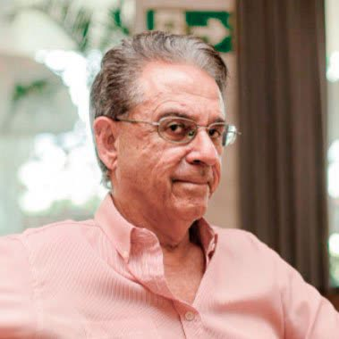
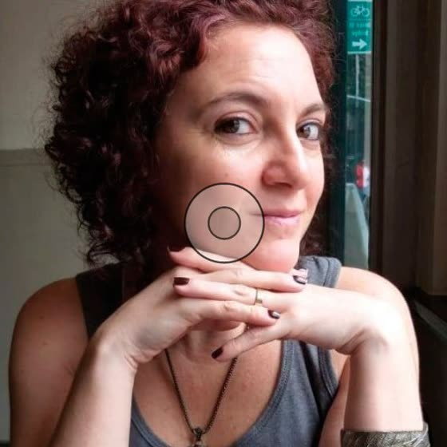
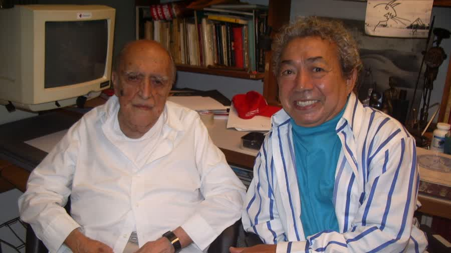
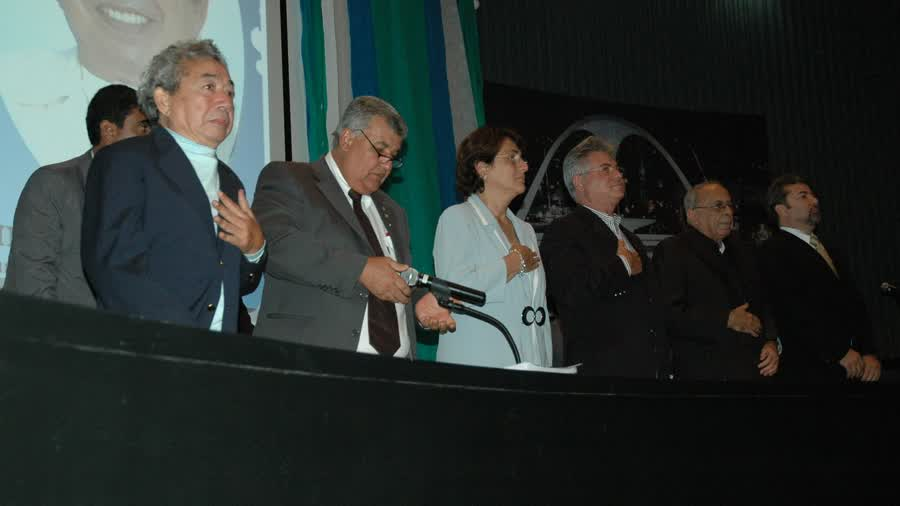
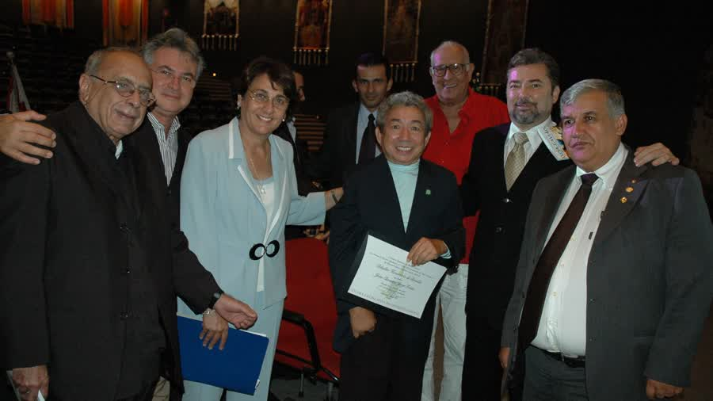
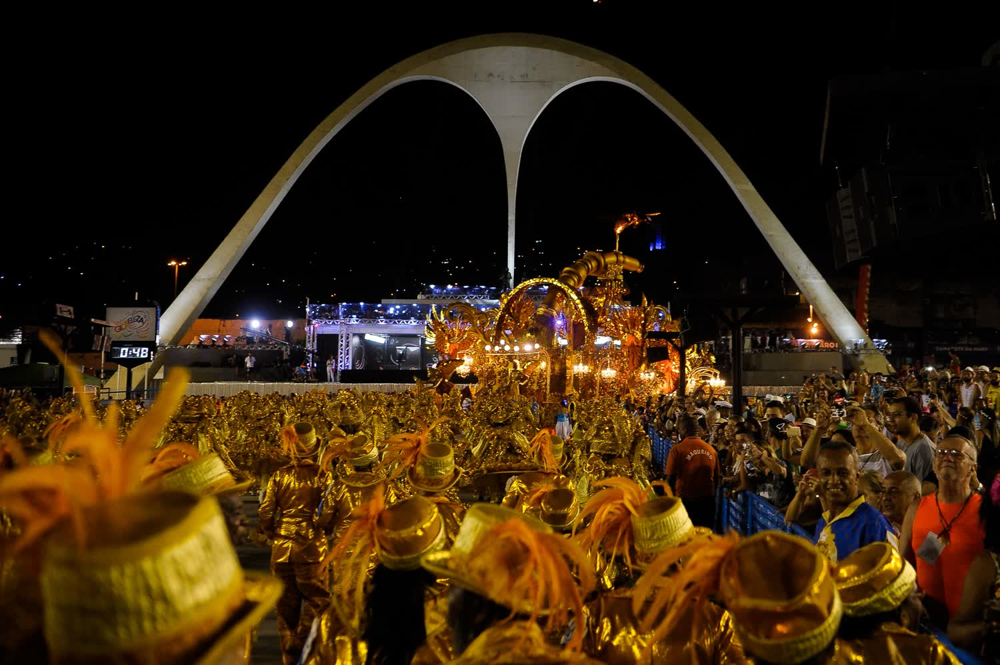
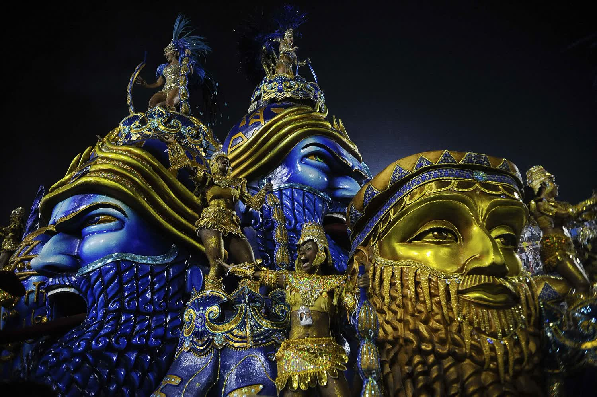

A equipe
Quem faz o Instituto.
Especialistas em economia criativa, direito, relações de governo, comunicação e artes. A cada projeto, a equipe chama os melhores técnicos para a tarefa.
Presidente e cofundador
José Ricardo Marques
O amigo que acolheu Joãosinho em Brasília e criou o Instituto com ele.
Advogado, jornalista e cientista político. Conheceu Joãosinho quando o carnavalesco se tratava no Hospital Sarah Kubitschek e o recebeu em casa por cerca de cinco anos. Em 2008, criaram juntos o Instituto, que ele preside hoje. Foi secretário de Cultura do Distrito Federal e diretor-geral do Arquivo Nacional, quando levou a memória brasileira ao Arquivo Ártico Global. Cidadão Honorário de Brasília.
A história dos dois →
Vice-presidente e diretor artístico
Fernando Bicudo
Ator, cantor, bailarino, economista e diplomata, e um dos maiores produtores de ópera do país. Dirigiu o Theatro Municipal do Rio nos anos 1980.

Comunicação e marketing estratégico
Renato Riella
Jornalista. Foi editor-chefe do Correio Braziliense e secretário de Comunicação do Governo do Distrito Federal. Idealizou a Capital Fashion Week.
Comunicação e artes
Leonardo Rivera
Jornalista e editor do caderno de Cidades do jornal O Dia. Trabalhou no marketing da Polygram lançando talentos da música brasileira.

Comunicação e produção
Eduardo Monteiro
Jornalista, publicitário e produtor cultural, há mais de 30 anos consultor de comunicação e marketing. Produz, roteiriza e dirige documentários.

Pesquisa e formação de público
Adriana Garuzi
Socióloga, comunicadora e pesquisadora em desigualdade social, mestre em sociologia e antropologia. Foi produtora e editora do Globo Esporte.
Acervo
A casa guarda a memória.
Joãosinho em premiações, ateliês e avenidas, ao lado de quem criou o Instituto com ele.






Fotos do acervo do Instituto Joãosinho Trinta.
A avenida
O luxo que ele defendeu continua desfilando.



